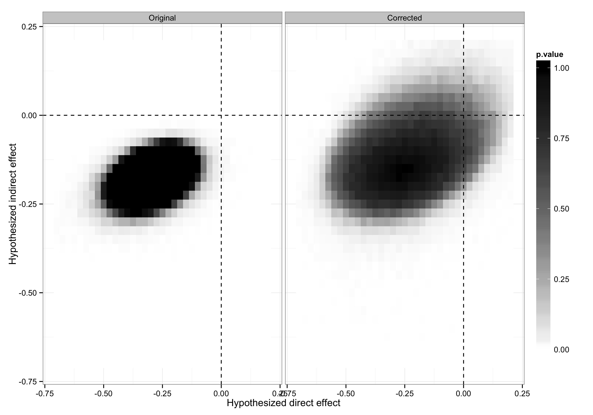

Information Spillovers: Another Look at Experimental Estimates of Legislator Responsiveness
Coppock, Alexander. 2014. Journal of Experimental Political Science 1(2): 159–169. doi:10.1017/xps.2014.9
A field experiment carried out by Butler and Nickerson (Butler, D. M., and Nickerson, D. W. (2011). Can learning constituency opinion affect how legislators vote? Results from a field experiment. Quarterly Journal of Political Science 6, 55–83) shows that New Mexico legislators changed their voting decisions upon receiving reports of their constituents’ preferences. The analysis of the experiment did not account for the possibility that legislators may share information, potentially resulting in spillover effects. Working within the analytic framework proposed by Bowers et al. (2013), I find evidence of spillovers, and present estimates of direct and indirect treatment effects. The total causal effect of the experimental intervention appears to be twice as large as reported originally.

Figure 1 from paper: Correction to Coppock (2014): the corrected p-value map for the Ideological Similarity spillover model.
Corrected in 2016. A coding error affected the results in Figures 2 and 3 of the original article: the similarity matrix falsely implied that all legislators were equally close to one another in ideological space. On the corrected estimates there is insufficient statistical evidence to conclude that indirect exposure to information altered legislator behavior. The figure above is the corrected one, from the corrigendum. The original article is linked for the record.
Coppock, Alexander. 2016. Information Spillovers: Another Look at Experimental Estimates of Legislator Responsiveness — CORRIGENDUM. Journal of Experimental Political Science 3(2): 206–208. doi:10.1017/xps.2016.8